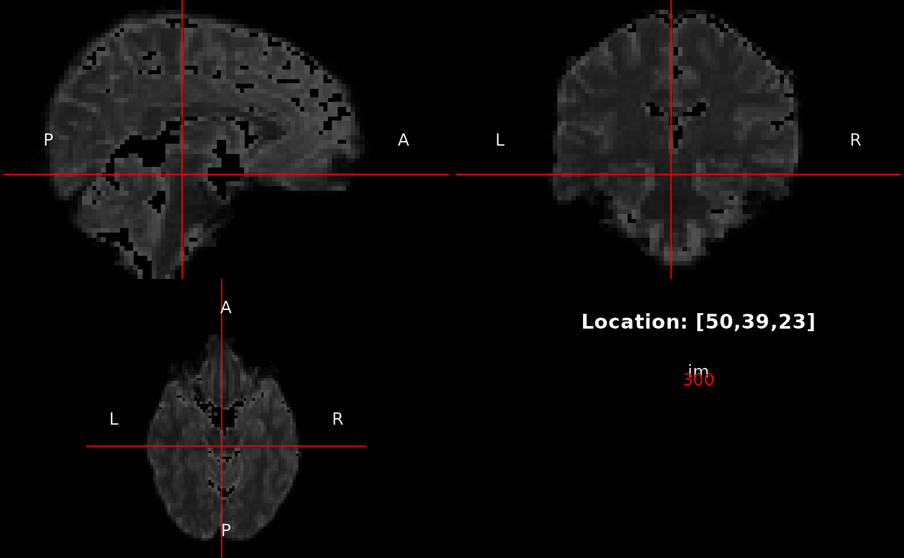

This function displays one or more 2D or 3D images, with optional click-to-navigate interactivity.
view(..., point = NULL, radiological = getOption("radiologicalView",
FALSE), interactive = base::interactive(), crosshairs = TRUE,
labels = TRUE, infoPanel = defaultInfoPanel)
lyr(image, scale = "grey", min = NULL, max = NULL, mask = NULL)| ... | One or more images, or |
|---|---|
| point | A numeric vector giving the location to initially centre the view on. If crosshairs are in use, they will be placed at this point. For 3D images, this parameter also determines the planes shown in each subview. |
| radiological | Logical value. If |
| interactive | Logical value. If |
| crosshairs | Logical value, indicating whether crosshairs should be shown or not. |
| labels | Logical value, indicating whether orientation labels should be
shown or not. Ignored (defaulting to |
| infoPanel | A function of three arguments, which must produce a plot
for the information panel of the view. |
| image | The image being shown in this layer. |
| scale | A character vector of colour values for the scale, or a single
string naming a predefined scale: |
| min, max | The window minimum and maximum for the layer, i.e., the black
and white points. These are ignored for RGB images. Otherwise, if
|
| mask | A optional mask array, which may be of lower dimensionality than
the main image. If specified, this is converted to logical mode and pixels
that evaluate |
lyr returns a list of class "viewLayer", to be used
in a view. view is called for its side-effect of showing a view.
Because of the way R's main run-loop interacts with graphics, it will
not be possible to issue further commands to the terminal while
interactive mode is enabled. Instructions for leaving this mode are shown
by the default info panel; see also locator, which is the
underlying core function.
Jon Clayden <code@clayden.org>
im <- readNifti(system.file("extdata", "example.nii.gz", package="RNifti"))
view(im, interactive=FALSE)
view(lyr(im, max=800), interactive=FALSE)
view(lyr(im, mask=im<800), interactive=FALSE)
